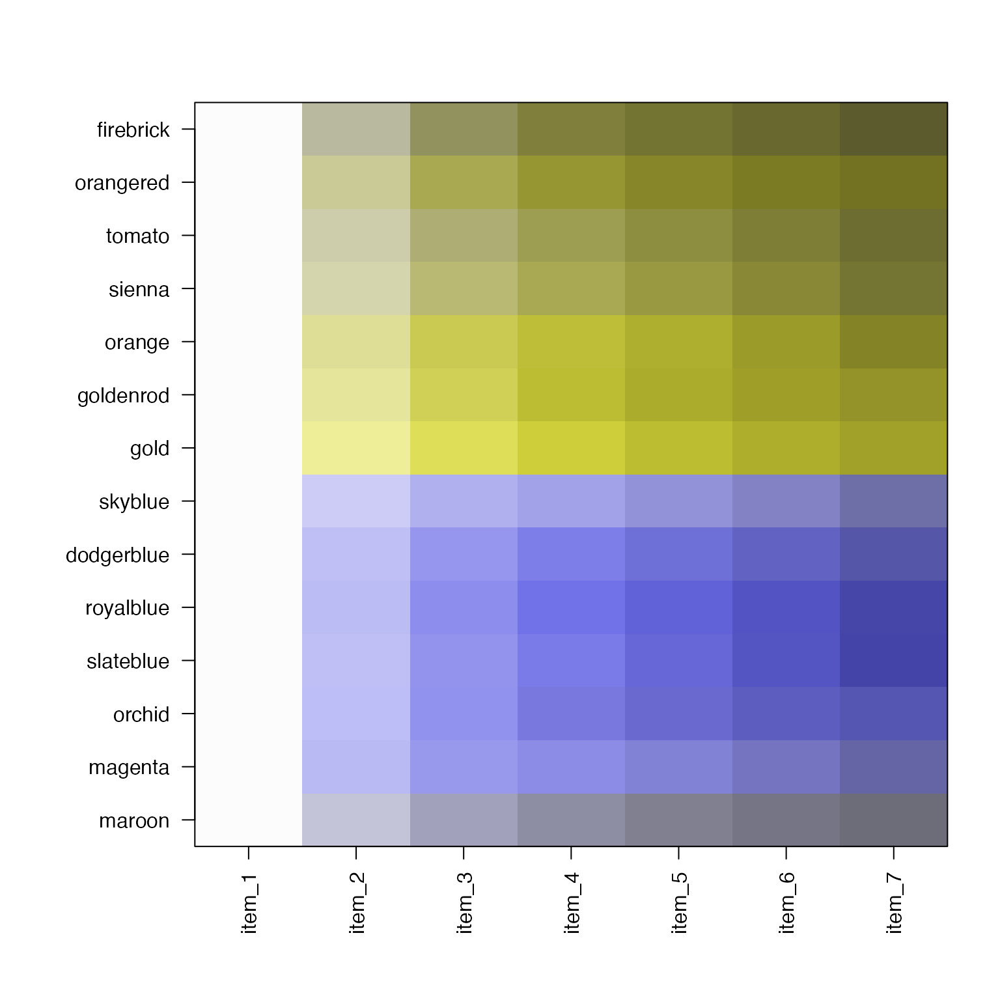
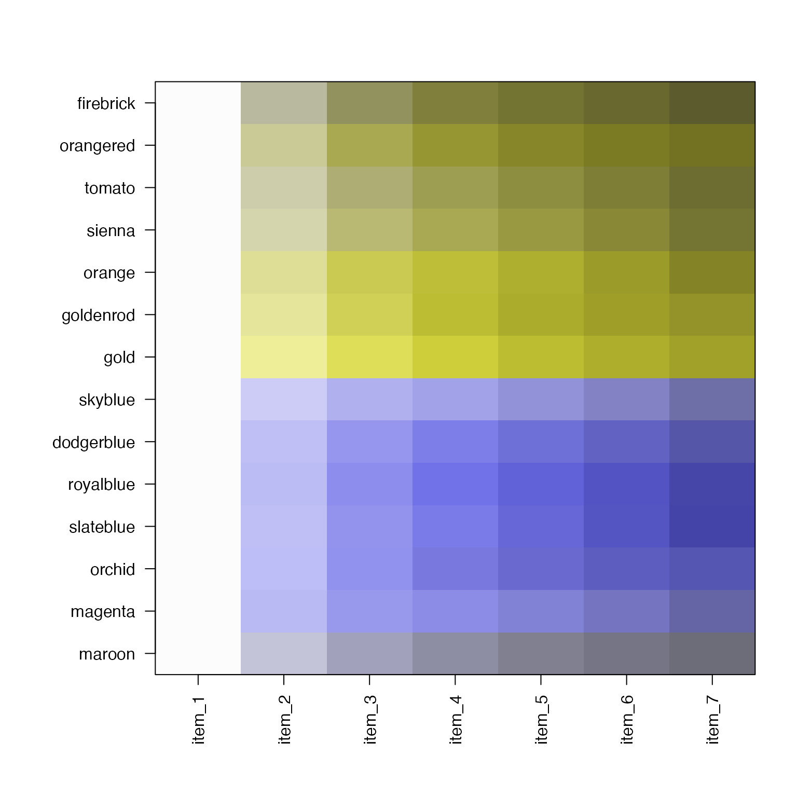

Jam Linear Color Gradients that are color-blind-friendly.
jam_linearFormat
An object of class list of length 14.
Details
This data contains a list of linear/sequential color
gradients generated with
a multi-hue technique similar to that used by RColorBrewer
to expand the visual clarity of a linear single-hue color
gradient. Colors were chosed to avoid common color-blindness
problems, and to maximize visual differences between
color gradients.
The colors in jam_linear are designed so that colors
in jam_divergent can be chosen for consistency.
For example linear color gradient "firebrick" can
be used to show coverage values, and "skyblue_firebrick"
can be used to show coverage difference from control,
and in both cases the maximum color is "firebrick".
These linear gradients are designed with a white background
color. Note the jam_divergent colors are designed with
a black background, intended to help indicate that these
colors are divergent.
In general, there are seven warm color tones, and seven cool color tones. Visual distinction is only expected between warm and cool color tones, and is not distinct within the same color tone.
Each color is named by the closest corresponding R color:
firebrick
orangered
tomato
sienna
goldenrod
gold
skyblue
dodgerblue
royalblue
slateblue
orchid
magenta
maroon
See also
Other colorjam data:
jam_divergent,
named_colors
Examples
data(jam_linear)
jamba::showColors(jam_linear)
 # show the same with dichromat adjustment
if (require(dichromat)) {
jamba::showColors(lapply(jam_linear, dichromat::dichromat))
}

# show the same with dichromat adjustment
if (require(dichromat)) {
jamba::showColors(lapply(jam_linear, dichromat::dichromat))
}
